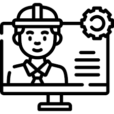

A Engenharia de Software capacita as pessoas com a utilização de teorias, técnicas e ferramentas da Ciência da Computação para produção e desenvolvimento de sistemas. Por meio da análise, coleta e processamento de dados, ainda identificam potenciais falhas nesses produtos e criam soluções de alta performance. O objetivo dessa Engenharia é acompanhar as inovações e ensinar aos alunos as melhores técnicas e modelos a serem seguidos. Com esse conhecimento adquirido em uma graduação, o profissional tem diversas oportunidades de atuação no mercado, como veremos a seguir. Entre as coisas que um engenheiro de software pode fazer estão: Criação e desenvolvimento de jogos e programas para computadores, videogames e etc.
A história da informática no Brasil começou na década de 1950, com a instalação do primeiro computador, o Univac 120, em 1957. O conceito de Engenharia de Software surgiu em 1968, em uma conferência da NATO, em resposta à crise do software.
1 – Foi no fim da década de 1930 que a Engenharia de Computação teve seu início, em 1939, através de Clifford Berry (cientista da computação) e John Vincent Atanasoff (matemático), iniciaram o desenvolvimento do primeiro computador digital eletrônico do mundo tendo como base a Matemática, Engenharia Elétrica e a Física. Já o primeiro protótipo de computador como conhecemos hoje, foi criado em 1973, pela IBM.
2 – No Brasil, o primeiro curso de Computação surgiu no fim da década de 1960, a partir de então, diversas universidades passaram a ofertar cursos na área. A década de 1980 teve como marco da Lei da Informática, o que impulsionou ainda mais o desenvolvimento da área no país.
3 – Mercado consolidado! O mercado de trabalho para os engenheiros de computação está em alta e segue em grande crescimento, afinal, vivemos em um mundo cada vez mais tecnológico, e o mercado precisa deste profissional para se modernizar e criar soluções, desenvolver tecnologias para a nossa sociedade. Os salários são muito altos e o profissional tem se tornado essencial para o mercado de trabalho.
4 – Diversas áreas de atuação! Você encontrará oportunidades de emprego em vários locais, desde bancos a instituições financeiras, consultoria tecnológica, empresas e comércio eletrônico, dentre outros.
5 – Médias salariais altíssimas! Segundo o site Vagas, a média salarial para o profissional da Engenharia de Computação é um dos melhores do país, girando em torno de R$ 6.526,00, podendo ultrapassar os R$ 10 mil reais ao longo dos anos!

6 – Grandes nomes revolucionários da tecnologia: Bill Gates, fundador da Microsoft aos 20 anos. Ada Lovelace, primeira programadora da história. Steve Wozniak, o verdadeiro designer do Apple I. Grace Hopper: a divulgação de linguagens de computador. Mark Zuckerberg,fundador do Facebook. E muitos outros!
7 – O perfil do engenheiro de computação é diverso. O curso de Engenharia de Computação é um curso da área de exatas, ou seja, encontrar “problemas”, projetar e criar soluções será o foco de quem ingressar nesta área. Curiosidade, atenção às necessidades e conexão com as novidades do mercado, bem como gostar de propor soluções e resolver problemas, também são características deste profissional, afinal, através dos seus conhecimentos, você poderá criar diversas soluções tecnológicas para melhorar o cotidiano de empresas e pessoas.
8 – O dia a dia do engenheiro de computação: Você desenvolverá habilidades específicas de profissionais de engenharia, agregando computação, tudo com muita tecnologia no projeto de produtos de hardware e de software para segmentos diversos como pessoal, comercial, residencial e industrial. Criará soluções tecnológicas para resolver diversos problemas e auxiliar no desenvolvimento econômico e de toda a sociedade.
9 – Comemora-se no dia 11 de dezembro o Dia do Engenheiro Civil.
10 – O que o um engenheiro de computação pode criar? Dentro da tecnologia, as possibilidades são infinitas. No campo do software, o engenheiro cria diversos programas para computadores, além de aplicativos, tanto para computadores quanto para celulares, já na área da automação industrial e robótica, irá desenvolver sistemas digitais, robôs e muito mais. Montar um computador, desenvolver programas, criar jogos, aplicativos, sites, tornar uma casa totalmente inteligente por meio da tecnologia e muito mais. A área da computação é incrível! Além das duas citadas, existem diversas outras!
E por fim, para começar a trabalhar na área de Engenharia de Software, é preciso fazer uma graduação superior na área. A formação mais tradicional é o curso de Ciências da Computação, que tem duração de quatro anos, então escolha uma faculdade boa e vai fundo!!.
Feito por: Henrique Tenfen Soberanski e Kauani Da Costa Machado